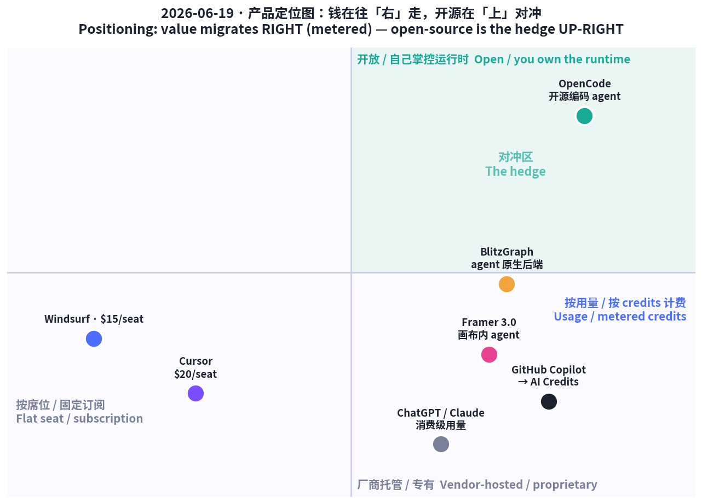
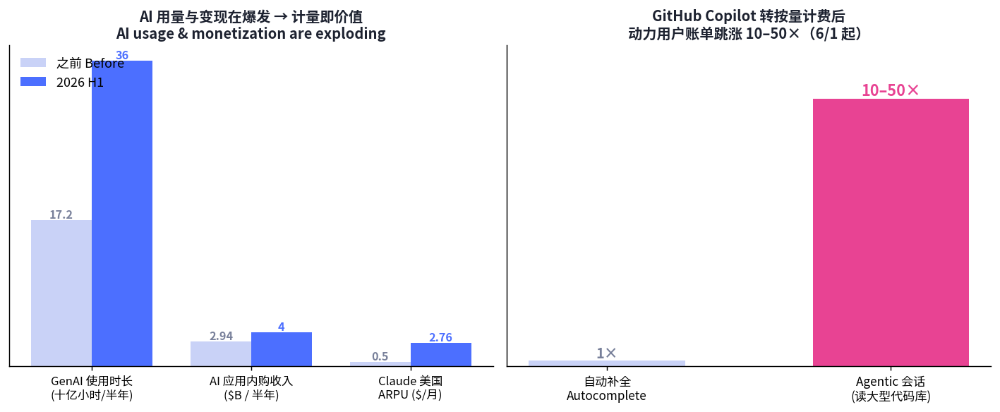

三股力量在同一天交汇：
消费侧延续「看得见、马上有效」：TikTok Shop 靠可演示好物把「看到」变「下单」，Amazon 偏「省空间、解具体麻烦」；小红书进入 「种草效果化时代」——内容前置、快速验证，靠「活人笔记」的真实感赢信任。

五条最强信号 / Five strongest signals
6 月 16 日上线即拿下 Product Hunt 当日 #1。最大变化是把 agent 直接放进设计画布：在真实项目里生成页面、改组件与样式、写代码、管理 CMS、审查站点（找断链）。三件套：Branching（agent 改动落隔离分支，评审合并后才发布）、External Agents（接 Claude Code / Cursor / Codex / Gemini CLI）、重建的 Community。商业上同步换挡：AI 改 AI Credits 计费（免费版 500 credits/天 ≈ 2 落地页，当日清零），编辑席位 $40 → $20、砍掉 Scale 套餐。
Framer 3.0 (#1 PoD) puts agents inside the design canvas — generate pages, edit components, write code, manage CMS, audit a site — plus Branching, External Agents (Claude Code/Cursor/Codex/Gemini CLI), and a rebuilt Community. AI now runs on AI Credits; editor seat cut $40→$20; Scale retired.
| 维度 Dimension | 分析 Analysis |
|---|---|
| 商业模式 | 订阅（Free–$30/mo）+ AI Credits 按量计费；降席位价、抬 AI 用量变现。 |
| 核心功能 | 画布内 agent（生成/改样式/写码/审站）+ 分支评审 + 外接编码 agent。 |
| 成功因素 | agent 嵌进既有工作流（不另开 app）；一次性全量上线；价格下探拉新。 |
| 细分市场 | 无代码营销站、设计师与中小团队官网。 |
| 目标受众 | 设计师、独立创作者、需快速上线官网的团队。 |
| 品牌设计 | 「3.0」=平台级跃迁；定位「会自己干活的设计工具」。 |
| 产品数据 | PH 当日 #1；免费 500 credits/天；席位 $40→$20。 |
| 链接 | producthunt.com/products/framer · framer.com/events |
| 评论摘要 | 营销站效果惊艳，但仅 Framer 托管、无代码导出，复杂需求 AI 不稳，席位/地区计费「惊吓」招 1★。 |
当专有工具按 token 收费、账单失控，开发者用脚投向开源。OpenCode（SST / 现 Anomaly）是终端原生开源 AI 编码 agent：跑本机、接 75+ 模型、不存你的任何代码。能力强：专精子 agent（Explorer / Oracle / Librarian / Designer）、后台任务、深度 LSP/AST（编译器级理解）、tmux 实时围观、并行 agent、会话分享（URL 让同事实时看）。16 万+ star、900 贡献者、1.3 万+ commits，被称「史上采用最广的开源编码 agent」，6 月 AI 开发工具榜 #1。
As proprietary tools meter tokens, devs vote for open source. OpenCode (SST/Anomaly): terminal-native, 75+ models, stores none of your code, sub-agents, deep LSP/AST, tmux live view, parallel agents, session sharing. 160K+ stars, 7.5M monthly devs — #1 dev-tool of June.
| 维度 Dimension | 分析 Analysis |
|---|---|
| 商业模式 | 开源免费（自带模型 key，按各家用量付费）；变现走云/企业服务。 |
| 核心功能 | 终端原生编码 agent + 75+ 模型 + 子 agent + LSP/AST + 会话分享。 |
| 成功因素 | 不锁定 + 不存代码 + 自带 key 对冲账单与隐私焦虑；社区飞轮。 |
| 细分市场 | 终端重度、注重隐私与成本可控的工程团队。 |
| 目标受众 | 被专有工具按量计费吓到的开发者；OSS 拥趸。 |
| 品牌设计 | 「OpenCode」=开放、可拥有；终端美学 + 极客信任。 |
| 产品数据 | 16 万+ star；900 贡献者；月活 750 万；接 75+ 模型；6 月榜 #1。 |
| 链接 | opencode.ai |
| 评论摘要 | 被赞「自带 key、不锁定、可并行、可围观」；终端原生体验受核心开发者推崇。 |
Show HN 定位很抓人：「Supabase for graphs, built for LLM agents」。赌注是：agent 推理的是「关系」，后端却逼它用列/文档/集合表达。BlitzGraph 把现实建模成图——实体多类型、关系双向、内置搜索、为 agent 交互自动鉴权；agent 用类型化 JSON 查询即可正确取数，无需 SQL、join、ORM。可作远程 MCP server 直挂 agent。划线：Supabase 想「列」、Convex 想「文档」、MongoDB 想「集合」，BlitzGraph 想「图/关系」——agent 天然推理的形状。
"Supabase for graphs, built for LLM agents." Models reality as a graph (multi-kind entities, bidirectional relationships, built-in search, auto-auth); agents fetch via typed JSON queries — no SQL/joins/ORMs — and plug in as a remote MCP server.
| 维度 Dimension | 分析 Analysis |
|---|---|
| 商业模式 | 预计用量/席位制 BaaS（后端即服务）。 |
| 核心功能 | 图建模后端 + 类型化 JSON 查询 + 远程 MCP + 内置搜索/鉴权。 |
| 成功因素 | 数据层做成「agent 能一次写对」的形状；MCP 即插即用降摩擦。 |
| 细分市场 | 构建 agent 应用的开发者 / AI-native 创业团队。 |
| 目标受众 | 厌倦为 agent 写脆弱 SQL/ORM 胶水的工程师。 |
| 品牌设计 | 「Blitz」=快；类比 Supabase 降低理解成本。 |
| 产品数据 | Show HN 6 月；具体 star/用量未公开。 |
| 链接 | blitzgraph.com |
| 评论摘要 | HN 聚焦「agent 友好查询」卖点，亦有人质疑图 DB 通用性与迁移成本。 |
最具风向标意义：GitHub Copilot 6/1 起全线转「使用量计费」。每套餐含月度 AI Credits（1=$0.01，按 token 单价），代码补全与 Next Edit Suggestions 仍无限，其余（尤其 agentic 会话）全部计量。问题：读大型代码库、串联多次调用的 agentic 会话成本是补全的 50–100×——动力用户账单跳涨 10–50×，470 万付费用户怨声四起。固定价竞品受益：Cursor（$20/mo，估值约 $20 亿）、Windsurf（$15/mo）。Framer 也改 AI Credits——行业集体从「按人头无限」走向「按 token 算钱」。
GitHub Copilot moved all plans to usage-based AI Credits (June 1; 1 credit=$0.01). Agentic sessions cost 50–100× autocomplete → power-user bills jump 10–50×, angering 4.7M subs. Flat-price rivals (Cursor $20, Windsurf $15) benefit; Framer switched too.

| 维度 Dimension | 分析 Analysis |
|---|---|
| 商业模式 | 按用量 AI Credits（1=$0.01）；Pro $10($15)/Pro+ $39($70)/Max $100($200)。 |
| 核心功能 | 补全无限 + agentic 计量；额度可加购。 |
| 成功/争议 | 抓「用量爆炸」变现窗口，但定价透明度与突涨引发反弹。 |
| 目标受众 | 企业与重度 agentic 编码者。 |
| 产品数据 | 470 万付费；账单跳涨 10–50×；agentic 成本 50–100× 补全。 |
| 链接 | github.blog · Copilot billing |
| 用户口碑 | 「同样工作，月底账单翻几十倍」；部分转向 Cursor/Windsurf/开源。 |
为什么敢按量收费？因为用量与变现都在爆炸。Sensor Tower《State of AI 2026》（约 6/16）：GenAI 应用使用时长半年 172 亿 → 360 亿小时（YoY >2×）；带「AI」标签应用上半年下载有望 100 亿；AI 应用内购上半年 超 $40 亿（较 25H2 +36%）。格局：ChatGPT 5 月达 10 亿 MAU（史上最快，仅 3 年），但 True Audience 份额 3 月首破 50%；Gemini 27.7%/6.62 亿，Claude 10.3%/2.45 亿。最劲的是 Claude 单位经济：美国 ARPU 半年 $0.50 → $2.76（5×+），人均 40 → 120 分钟/月，单用户收入反超 ChatGPT。
Sensor Tower State of AI 2026: GenAI app time 17.2B→36B hours (>2×); ~10B H1 AI downloads; AI IAP >$4B (+36%). ChatGPT 1B MAU in May (fastest ever) but True Audience share fell <50% (March); Gemini 27.7%/662M, Claude 10.3%/245M. Claude US ARPU $0.50→$2.76 (5×+), 40→120 min/user/mo, beats ChatGPT on revenue-per-user.
| 维度 Dimension | 分析 Analysis |
|---|---|
| 商业模式 | 订阅 + 应用内购 + API 用量；变现随时长/强度上行。 |
| 核心信号 | 用量翻倍、收入 +36%、Claude ARPU 5×——计量成主旋律。 |
| 成功因素 | 把「使用强度」做成增长引擎（时长↑→ARPU↑）。 |
| 目标受众 | 全球消费者与开发者。 |
| 产品数据 | 时长 360 亿 h；IAP >$40 亿；ChatGPT 11 亿+ MAU；Claude 2.45 亿、ARPU $2.76。 |
| 链接 | sensortower.com/blog/state-of-ai-2026 |
| 解读 | 「ChatGPT 仍最大，但对手在逼近；Claude 用更少用户赚更多钱」。 |
实体好物赢家逻辑：「看得见、几秒见效」。TikTok Shop 6 月初榜首是 Beauty by Earth 自晒美黑乳（防晒 + 小麦色），首周登顶；$30 以下氛围灯长期病毒式（出镜好看、卧室「氛围感」内容王）；护肤、补剂、清洁工具、美妆因「高频 + 效果秒见」走量。Amazon Movers & Shakers 偏 「省空间、解决具体麻烦」：真空压缩袋、紧凑多用途好物、健身（氯丁橡胶哑铃）、厨房小工具。TikTok Shop 预计 2027 占美社交电商 24.1%。
Physical goods reward "see it, works in seconds." TikTok Shop's early-June #1: Beauty by Earth self-tanning lotion; sub-$30 mood lights stay viral. Amazon skews to space-saving / solve-a-pain (vacuum bags, compact multi-use, dumbbells, kitchen gadgets). TikTok Shop ~24.1% of US social commerce by 2027.
| 维度 Dimension | 分析 Analysis |
|---|---|
| 商业模式 | 内容即货架 + 达人佣金 + 冲动转化。 |
| 核心因素 | 单一痛点 + 可演示 + 秒级「上手感」+ 出镜好看。 |
| 细分市场 | 美妆个护、家居收纳、氛围好物、厨房小工具。 |
| 目标受众 | 刷短视频冲动消费的年轻人 / 小户型人群。 |
| 品牌设计 | 视觉先行、效果可视；价格友好（多 <$30）。 |
| 产品数据 | 自晒乳首周 #1；氛围灯 <$30 病毒款；TikTok Shop 2027 占 24.1%。 |
| 链接 | tiktok best-sellers · amazon movers & shakers |
| 评论摘要 | 「演示视频一看就懂、马上下单」；退货集中在「实物不及演示」。 |
小红书 2026 WILL 商业大会定调 「种草进入效果化时代」：靠内容前置、快速验证、新品测试，更早发现真实使用场景，提升上新效率与「爆款命中率」——种草看可衡量的转化效果。运营从「爆款破圈」转向人群/场景/兴趣的极致精细化。内容从「精致仪式感」转向「真实放松」，品牌靠「活人笔记」（真实、口语、不端着）传递可信度。兴趣驱动消费升温：追星、非遗、博物馆夜游、文旅兴趣出游。一句话：真实感 + 可衡量效果，正取代「精致摆拍 + 泛流量」。
Xiaohongshu's 2026 WILL conference: "seeding enters the outcomes era" — content-first, rapid validation, measured by conversion not buzz; hyper-granular targeting; "real & relaxed" tone via authentic "living-person notes"; interest-driven consumption (fandom, heritage, museum night-tours, interest travel) rising.
| 维度 Dimension | 分析 Analysis |
|---|---|
| 商业模式 | 种草内容 → 效果化投放 → 新品测试/转化闭环。 |
| 核心因素 | 内容前置 + 真实「活人感」+ 精细化人群/场景。 |
| 细分市场 | 美妆/个护/文旅/兴趣消费品牌。 |
| 目标受众 | 重兴趣、重真实、反「过度精致」的年轻用户。 |
| 品牌设计 | 「活人笔记」=去广告化、口语化、真实场景。 |
| 产品数据 | WILL 主题「效果化」；兴趣出游（追星/非遗/夜游）升温。 |
| 链接 | 小红书 WILL 商业大会报道 |
| 评论摘要 | 商家：「投放更看 ROI / 验证更快」；用户：「更信真实分享、反感硬广」。 |
| 产品 Product | 类别 | 商业模式 | 核心卖点 | 目标受众 | 关键数据 | 链接 |
|---|---|---|---|---|---|---|
| Framer 3.0 | 设计/Agent | 订阅 + AI Credits | 画布内 agent + 分支评审 | 设计师/中小团队 | PH #1；席位 $40→$20 | link |
| OpenCode | 编码 Agent | 开源 + 自带 key | 终端原生、不锁定、75+ 模型 | 注重成本/隐私开发者 | 16 万★；月活 750 万 | link |
| BlitzGraph | 后端 Infra | 用量 BaaS（推测） | agent 原生图后端 + MCP | 建 agent 应用开发者 | Show HN 6 月 | link |
| GitHub Copilot（趋势） | 编码计费 | 按量 AI Credits | 补全无限 + agentic 计量 | 企业/重度编码者 | 470 万付费；账单 10–50× | link |
| Sensor Tower 数据 | 市场/数据 | — | 用量翻倍、Claude 单用户收入反超 | 投资人/产品 | 360 亿 h；IAP >$40 亿；Claude ARPU $2.76 | link |
| TikTok Shop / Amazon | 消费 | 内容即货架/佣金 | 可演示 + 秒级见效 | 短视频冲动买家 | 自晒乳首周 #1；2027 占 24.1% | link |
| 小红书（中国） | 消费 CN | 效果化种草 | 真实「活人笔记」+ 精细化 | 兴趣/真实导向年轻人 | WILL 主题「效果化」 | link |